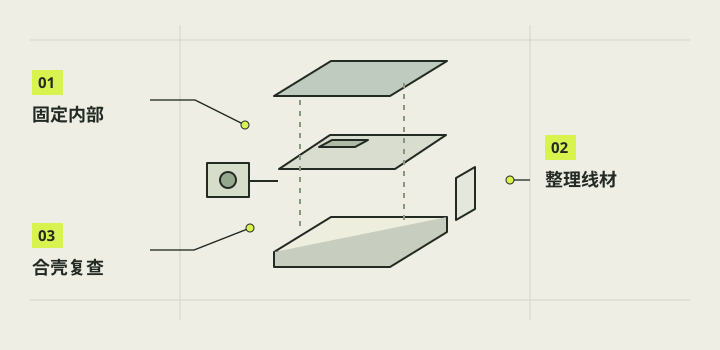

外壳安装与线材整理
装配不是把零件一次塞进壳里，而是给每个锁件、接头和软线留下操作次序。以下以当前高方盒与10月28日整合包为基线，并单列后续V31电池盒、G2充电口的条件替换。新件的数字路径已经检查，真实插拔力、胶接和长时间回位仍要用印件验证。

本章完成目标
- 在断电条件下按可执行顺序安装主要部件
- 让排线、供电线和充电线避开活动与扣合区域
- 合盖前完成机械和接线的逐项复查
开始前准备好
- 第13章关键小样与零件编号已核对
- 已有对应电池尺寸、镜头框、主壳和充电口版本
- 第10章接线位置已有设备实物记录，且相机已正常关机
- 空载架
- 先装入固定框但暂不固定树莓派主板，给其他部件留操作空间。
- 干装
- 不涂胶、不通电，先验证零件能装入、定位和退出。
- 线根
- 线缆从接头或电池包出来的最易受拉扯区域。
断电并建立清楚的工作朝向
若机器已合盖，先让系统正常关机，拔掉外部充电线，托住底盖并逐枚解除四只16盖扣；只小幅打开，不让底盖吊在充电尾线上。露出机内电池到Pi的供电接头后再断开，随后才拆内部件。空壳装配则从未通电状态开始。铺软垫保护顶部屏幕，底盖开口朝上，并把镜头前壁、屏幕侧和左右固定点用可移除标签标明。
注意 / 内部供电接头在盖内，不能要求先断开它再打开已合上的底盖。
先放屏幕与成对镜头框
在空主壳中先放屏幕，让橙色排线与供电线从预留处自然进入，再安装02压框，压力落在边框而非玻璃。镜头用V29的05后压框和06前定位框成对夹住Camera Module 2，白色排线从缺口走出；沿原位置装12夹套和13锁键。总成从底盖口进入，靠角01侧用V29长固定鞋和长锁键，02侧用原短件，确认两耳都被承托。
注意 / 不要将旧05／06与V29新版混装或靠硬压镜筒求齐平。
装空Pi载架与隐藏控件
先预放三只10载架固定鞋，再下V28的03空载架；此时Pi板和电池暂不进壳。按现有可正常下拨方向装A_down盒架、开关原配金属螺母、轴套、圆盘、选定的一只B或C外柄及U卡环，随后装34刚性防退出键。电源按钮使用自己的金属螺母和35独立垫圈。确认盒架舌片入槽、拨杆松手可回位后，再装三根36长锁销。
注意 / V30的F／T是待选校准件，未试出合适档前沿用可工作的A_down基线。
按实际电池选择一套固定法
旧48×42×18毫米电池对应整合包的V28空09托盘、单独电池、07上梁、后侧入6／7鞋键的顺序。若换成48×40×20毫米电池，则V31的09一体固定桥盒体与07开窗面盖一起替换旧两件：先在机外放电池和线根、无胶干装整组，临时取出Pi主板而保持03框、36销、镜头与控件不动，确认整组能进出后才在机外胶接并充分固化。
注意 / 不把两代07／09交叉混装，也不在机内给电池外皮或线根上胶。
归位Pi并逐线留松弯
电池定位后，按对应说明侧入固定鞋和锁键，再让Pi板对准V28载架四角承台，装四只14小卡销。橙色屏幕排线、白色相机排线、按钮与拨杆线只回到已核对的原接口，不从颜色猜GPIO。让供电插头能完整插入，线缆在开放区留自然弯，避开拨杆扫动、长销尖端、散热开口和四只底盖扣；必要时先接线再让Pi最终落座。
注意 / 不要把多余线团塞在Pi散热面或用底盖压紧电池。
核对充电口与底盖后再闭合
现有04底盖可保留，充电口若换用F的G2方向修正版，只用G2的30滑盖、31托架、32后挡先与真实底盖干装；G1旧3MF和安装图方向已被证实镜像，不能按旧图直接上胶。无电时试滑盖和插头，给开盖的充电尾线留余量。确认镜头、三长销、两电池鞋键、拨杆防退出键及Pi卡销到位后，再装四只16盖扣，特别核对4号盖扣对拨杆锁键的后备限位。
注意 / G2的实物干装和胶接强度仍待验证，遇阻应暂停而非照旧G1图强贴。
完成后，逐项打勾。
勾选帮助你记录进度，不代表项目替你完成了实机验收。
遇到问题，从这里排查。
底盖只能靠卡扣硬拉上去
退回断电开盖状态，检查电池厚度、插头胶壳和线束夹点，不借盖扣施压。
拨杆松手不回位或虚位很大
检查盒架、圆盘、卡环和线束干涉；V30按先F后T逐档试，不叠装。
本项目的实际进展
- 旧电池路径与V31新路径应分别操作。
- G2修正G1镜像方向，实物胶接与新版图解待验。
资料与核对依据
- 当前完整安装说明 ↗
- V31电池盒安装图说明 · camera-project/E-结构/output/v31-battery-wrap-20261028/电池盒安装图说明.md
- G2方向修正先读 · camera-project/F-验收/output/20261028-usbc-glue-g2-direction-fix/先看这里-G2.md
资料核对日期：2026-10-30。不同硬件、系统版本和材料需要重新验证。